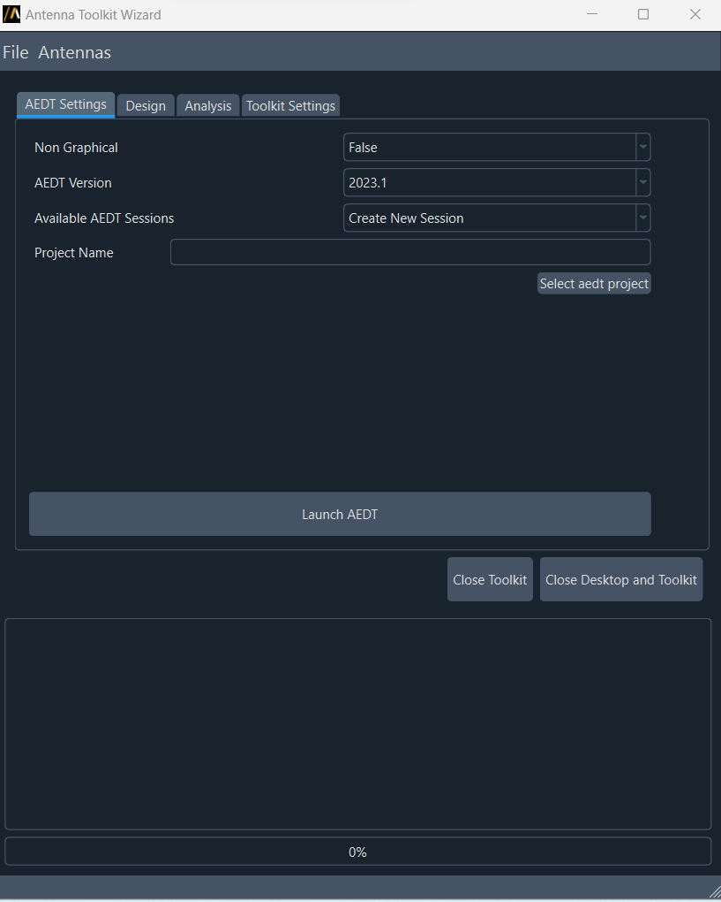
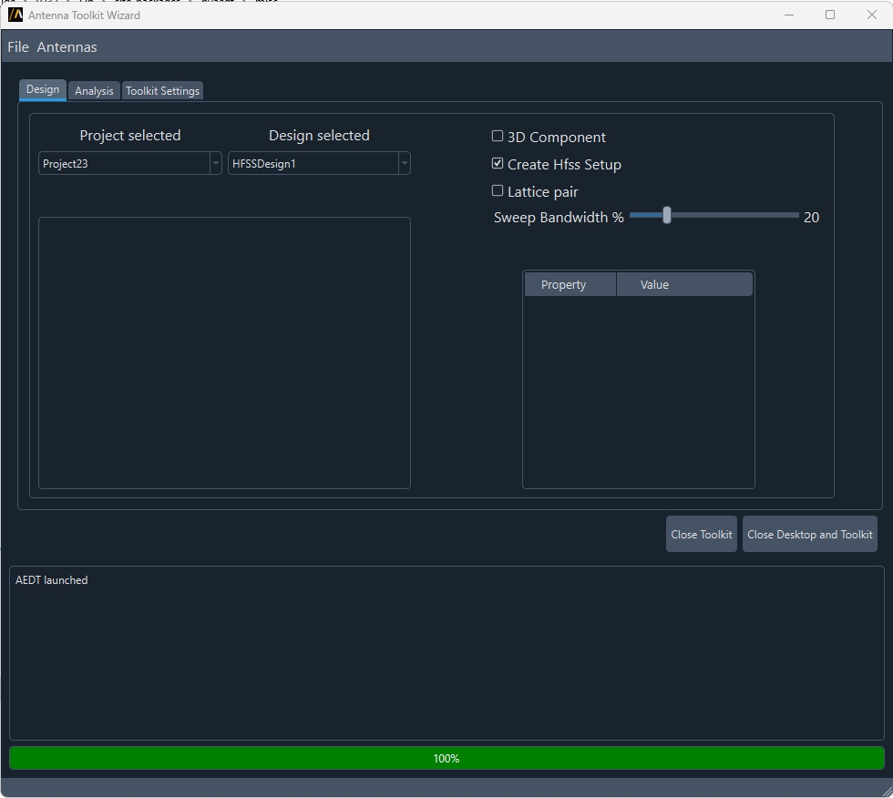
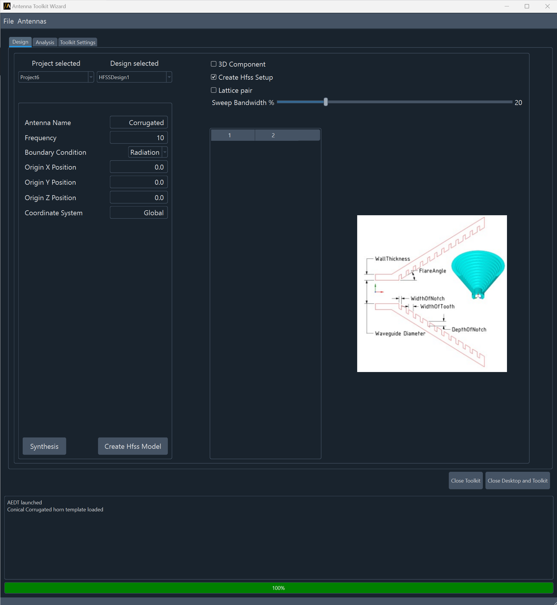
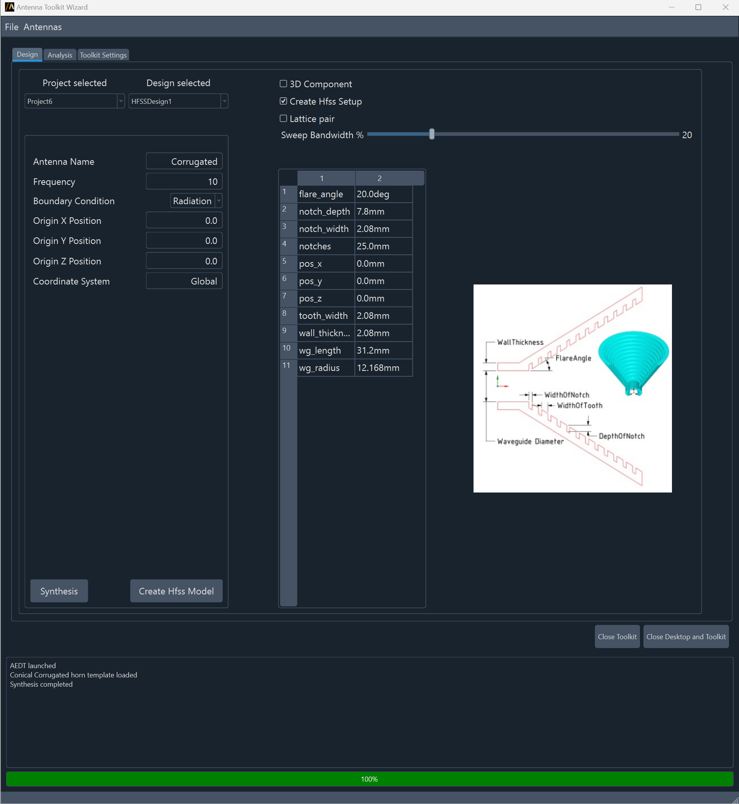
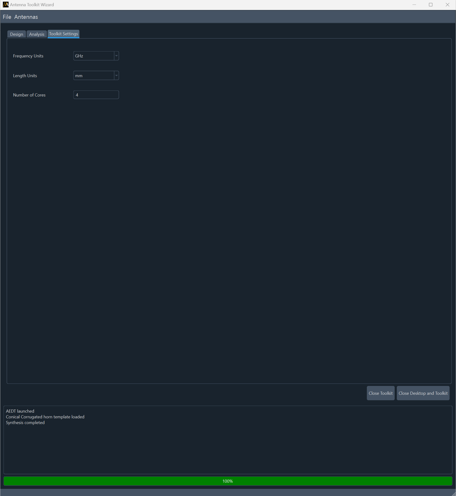
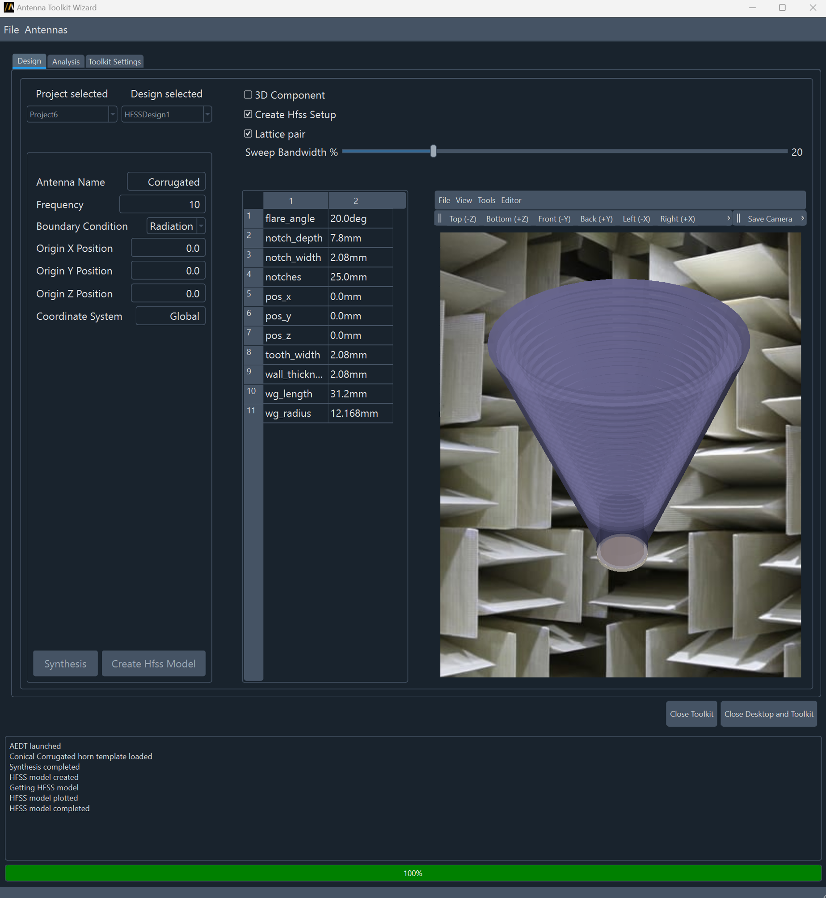
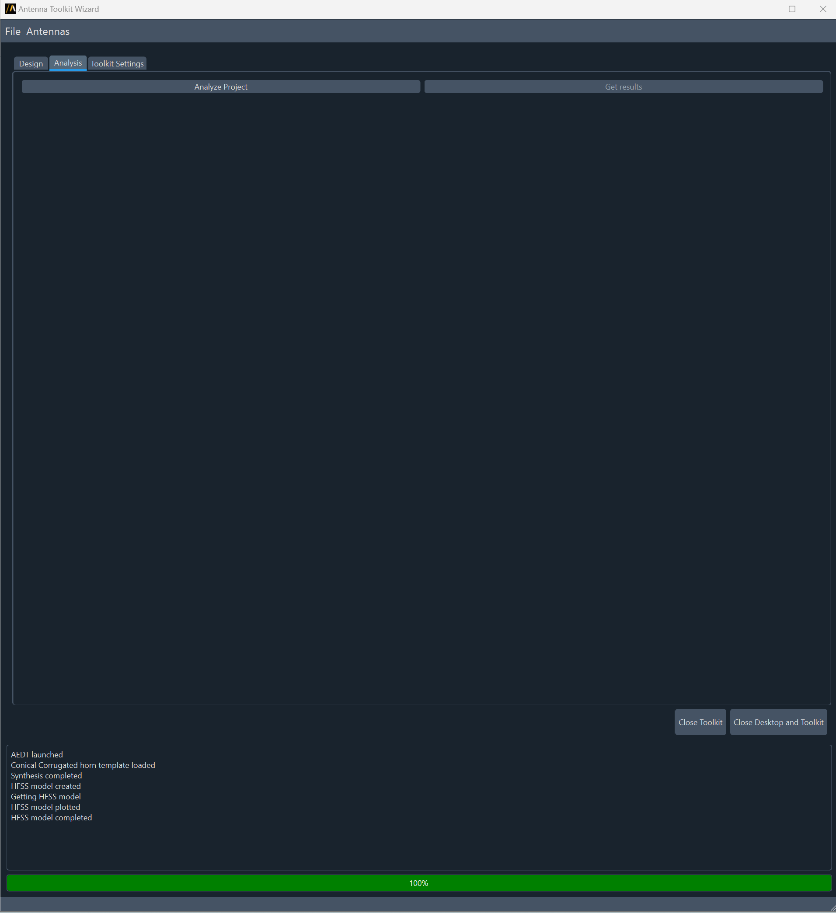
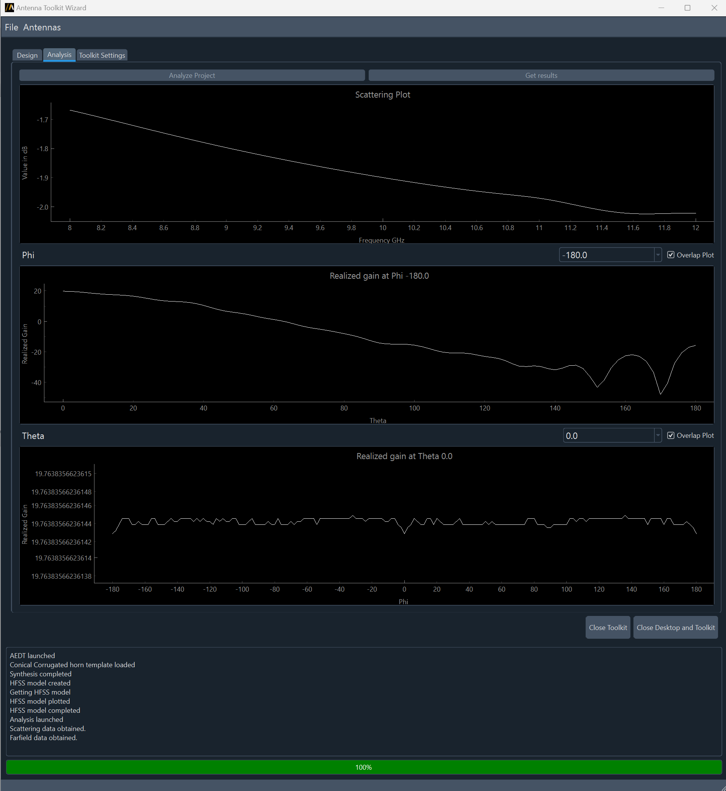

UI reference#
This section describes the Antenna Wizard. To run the Antenna Wizard, you must have a licensed copy of Ansys Electronics Desktop (AEDT) installed.
Once the Antenna Wizard is launched, you can choose settings from first page and connect to an existing AEDT session or create a new session.
{kind=link}
If the toolkit is launched from AEDT, the previous tab does not appear because the toolkit is directly connected to the specific AEDT session.
Once the toolkit is connected to AEDT, you can load the antenna template from the list Antennas.
{kind=link}
For example, if you select Antennas>Horn>Conical Corrugated, the synthesis option and the antenna template appears.
{kind=link}
You have two options, Synthesis, and Create HFSS Model. If the toolkit is not connected to AEDT, the second option is off.
Synthesis is performing the synthesis of the antenna and it does not need AEDT. You can see the parameters which controls the antenna geometry. You can do as many synthesis as you want, and even change the antenna template.
{kind=link}
Create HFSS Model creates the HFSS model. It uses the select boxes (3D Component, Create HFSS Setup, Lattice Pair and Sweep Bandwidth). It also uses the Toolkit Settings.
{kind=link}
If you select 3D Component, the toolkit creates the antenna and replaces it with a 3D Component.
If you selected Create HFSS Setup, it creates automatically boundaries, excitations and ports needed to simulate the antenna.
If you select Lattice pair, it creates a unit cell assigning Lattice Pair boundary.
Once you create the HFSS model, you can not create a new antenna. Synthesis and Create HFSS Model buttons are off. If you need a new antenna, you can restart the toolkit.
Once the antenna is created, the previous picture is replaced by an interactive 3D model, then if AEDT is launched in non-graphical mode, you can see the generated model.
{kind=link}
You can modify the parameters interactively. The HFSS model and the interactive 3D plot in the user interface change.
Finally, you can analyze the HFSS design. You have two options, analyze, and get results, the last one is off until the design is not solved. The project is submitted, then it is closed. You can see the job status opening the AEDT Job Monitor interface or in the user interface progress bar.
{kind=link}
Once the project is solved, you can get the results.
{kind=link}
You can save the project, File>Save project.
The wizard has a progress bar and a logger box, where the user can see the status of every operation. Red progress bar means the toolkit is busy, and every operation need to wait until the toolkit is released.
Enjoy.